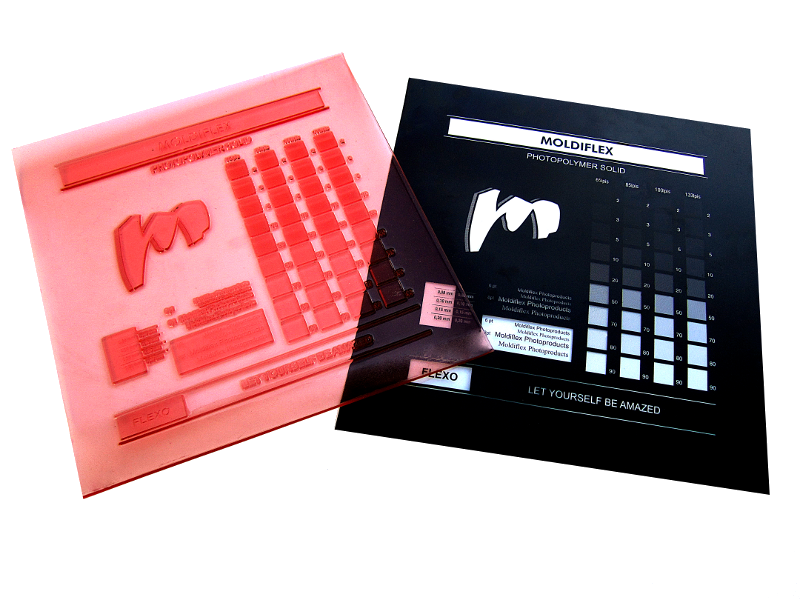
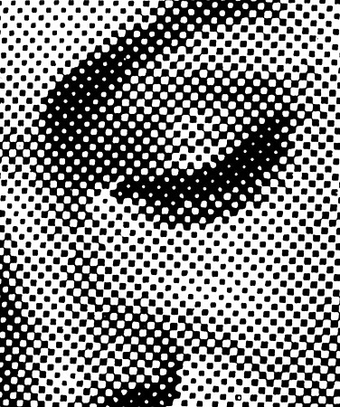
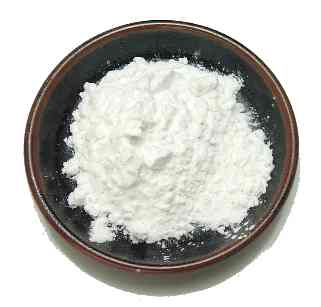
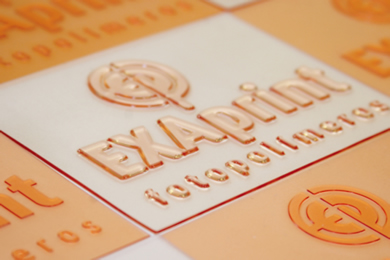

NEGATIVO
El principal concejo para un mejor acabado es el uso de un buen negativo, ya que practicamente aqui es donde depende que un trabajo quede con un alto porcentaje de nitidez que es lo deseado en este tipo de trabajos. Al trabajar con un negativo no litografico es muy probable que el trabajo final no sea el esperado, por ello para un mejor acabado el negativo en pelicula sera su mejor aliado.


TIPO DE DISEÑO
En la industria del sello lo normal es hacer sellos que el contenido solo posea letras y lineas, pero hay diseños que pueden ser un poco mas elaborados y logicamente brindaran al cliente una satisfaccion al ver el producto terminado, asi como tambien efectos de profundidad en un producto que es de una sola dimension y eso se logra utilizando tramas en el dibujo.
ENTREGA A REVENDEDORES
Para entregar trabajos a terceros se recomienda aplicar a la goma terminada un poco de almidon de yuca o almidon de maiz, este producto permitira que la goma se mantenga seca garantizando de esta manera que no se pegara a otros sellos o superficies.


MONTAJES
Al momento de hacer los montajes en pro de ahorrar fotopolimero y no perder tanto materia prima, recomendamos hacerlos de a pocas cantidades mientras se agarra experiencia, ya cuando se tengan exactamente los tiempos si puede aventurarse a hacer montajes de mayor cantidad de sellos.